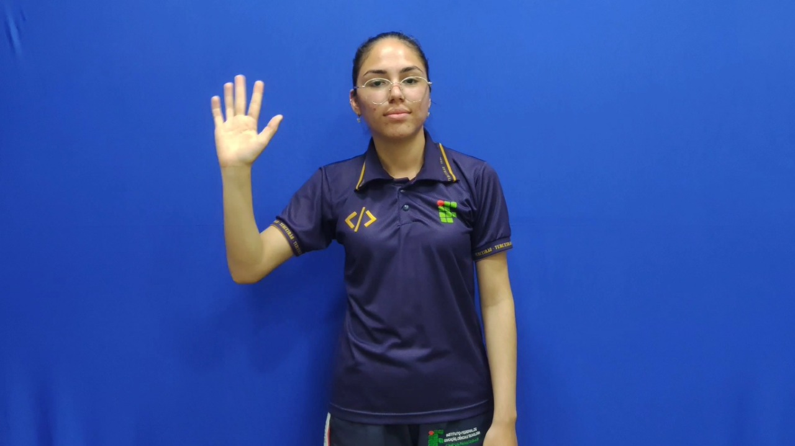
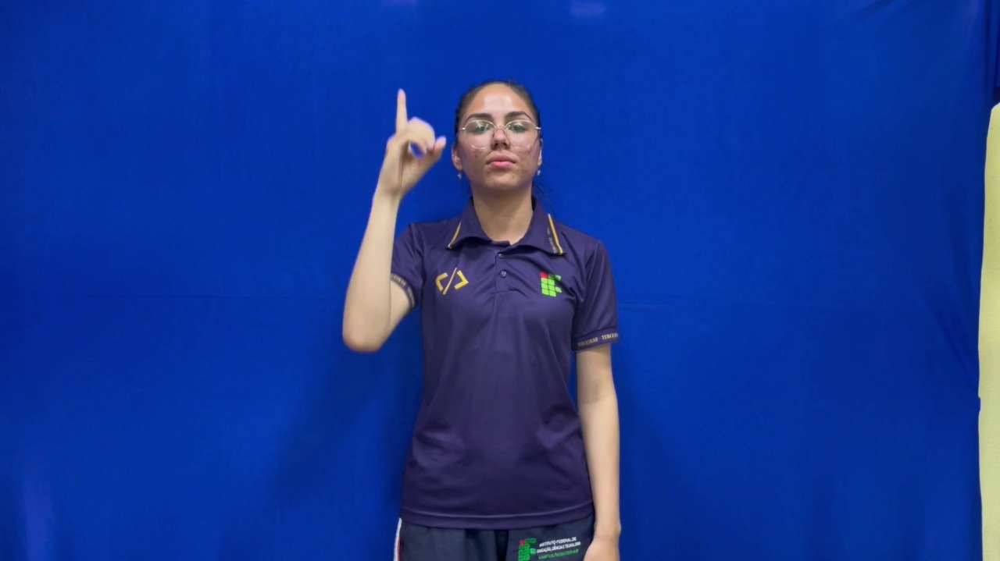
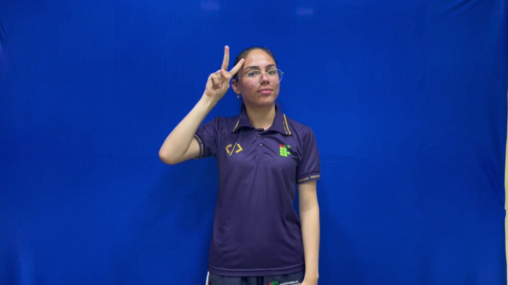
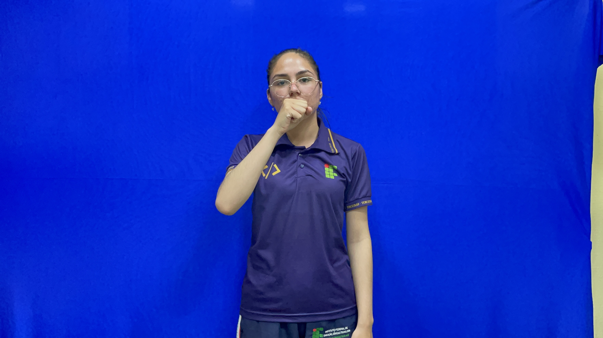

Saudações e Expressões


Oi


Olá


Bom Dia


Boa Tarde


Boa Noite


Boa Madrugada

Tchau
 1º.jpg)
 2º.jpg)
Obrigado(a)

Desculpa

Com Licença


Prazer em Conhecer


Tudo Bem

Comprimentos
Dias da Semana


Semana

Domingo

Segunda-Feira

Terça-Feira

Quarta-Feira

Quinta-Feira

Sexta-Feira

Sábado
Informática

Informática


Aplicativo


Banco de Dados


Programação

Linguagem de Programação
Agro e Sustentabilidade


Agropecuária


Irrigação


Sustentabilidade


Adubação


Agricultura Familiar
Pontos Turísticos de Parintins


Ponto Turístico


Catedral


Canta Galo

Mercado Municipal
Cultura de Parintins


Boi Caprichoso


Boi Garantido


Bumbódromo